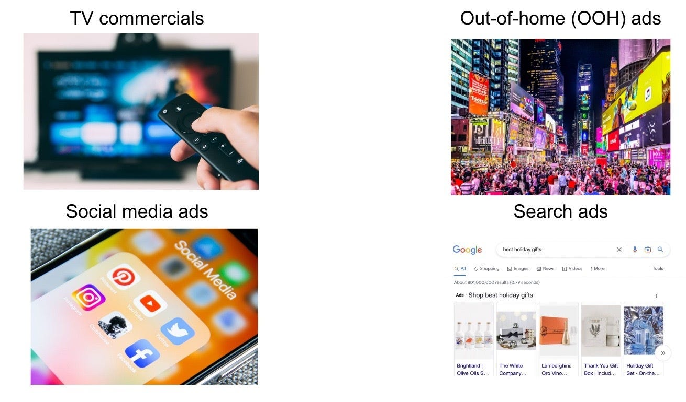
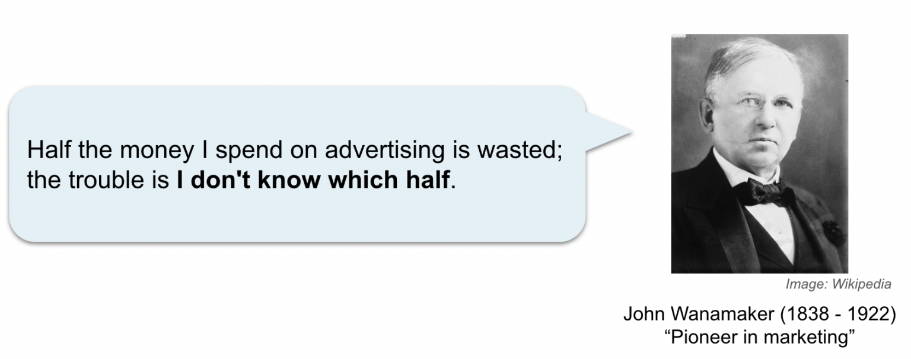
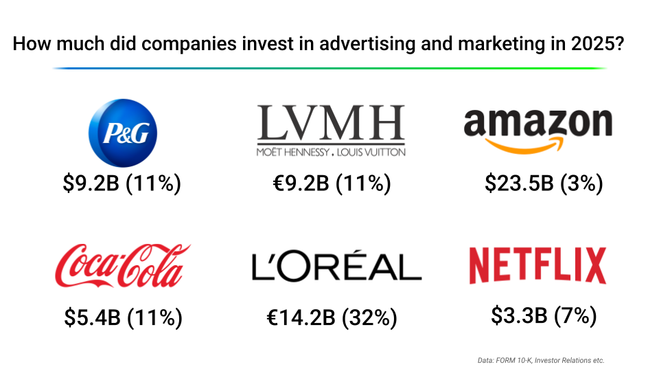

6.1 媒体测量问题
关于中文版
本页是英文版 Marketing Science in Python 的AI翻译。英文版为正式版本，如有出入，以英文版为准。代码、Notebook 和图片中的文字保持英文。 阅读英文版
广告媒体的类型
广告有多种形式：大型赛事期间的电视广告、时代广场的广告牌、社交媒体上穿插在朋友动态之间的广告，以及搜索结果上方的赞助内容。

各种广告形式各有作用。户外广告牌或电视广告能提升品牌知名度；搜索广告则承接已经存在的需求，将其转化为点击。
哪一半被浪费了？
百货公司创始人约翰·沃纳梅克常被视为现代广告业的先驱。这个问题最广为流传的说法据称出自他：
我花在广告上的钱有一半被浪费了；麻烦的是我不知道是哪一半。
一个多世纪之后，业界仍在引用这句话，因为它至今仍然适用。

企业在广告上花多少钱
涉及的金额只增不减。Procter & Gamble 在 2025 财年的广告支出为 $9.2 billion，约占其收入的 11%。Amazon 的广告支出为 $23.5 billion。而 L’Oréal 每 1 欧元的销售额中，大约有 32 欧分投向广告与促销。

在这样的预算规模下，效率提升 1% 就价值数千万美元。
我们能把电视广告支出削减 20% 吗？
“去年我们在电视广告上花了几百万美元。如果把预算削减 20%，销售额真的会变吗？”财务总监或首席执行官可能会问这个问题。为什么这么难回答？直接看各平台报告的广告支出回报率（ROAS） 不行吗？有三个原因。
各渠道的影响交织在一起。 假设有人在户外广告牌上注意到一个运动鞋品牌，几天后在 Instagram 上搜索这个品牌，最后点击搜索广告并购买。购买前有三个接触点，但 Google、Meta 和 TikTok 都会把用户点击或看到自家广告之后发生的购买归功于自己，因此同一笔销售可能被重复计算。购买记录也无法告诉我们，如果没看到户外广告，顾客是否仍会搜索并购买。我们需要把各渠道放在一起测量。
追踪记录不完整。 电视、广播和户外广告不会留下用户级记录，因而无法知道具体是谁接触了广告。数字追踪也有缺口。《通用数据保护条例》（GDPR）和 Apple 的 App 跟踪透明度机制都会限制哪些数据可以关联到个人。
削减 20% 的预算，并不意味着广告效果也会减少 20%。 即使我们确切知道去年的电视广告带来了多少增量收入，削减 20% 的预算也未必会损失 20% 的增量收入。如果减少播出次数后，覆盖的人群基本相同，只是每个人看到的次数变少，销售额可能几乎不变。如果更多人完全看不到广告，损失就可能更大。要回答这个问题，需要建立模型来描述销售额如何随支出变化。第 6.2 节会建立这样的模型。
测量体系
营销测量实际上是三个不同的问题，每个问题都有为其专门打造的工具。
| 工具 | 回答的问题 | 用途 |
|---|---|---|
| MMM | 应该如何在渠道之间分配预算？ | 为电视、搜索、社交媒体和线下渠道制定月度或季度预算 |
| 归因（多触点归因，MTA） | 转化前发生了什么？ | 在可追踪渠道内日常选择广告素材、关键词和受众 |
| 实验（增量测试） | 这项营销活动真的带来了增量销售吗？ | 为某个渠道或某项调整提供因果证据；三种方法中耗时最长、成本最高 |
第 6.2 节介绍 MMM，第 6.3 节介绍如何设计和分析实验，第 6.4 节用实验结果校准 MMM。
三种工具测量的量和覆盖范围不同，因此得出的数字往往也不同。如果统一测量对象和范围后仍有差异，就需要检查输入数据或假设。